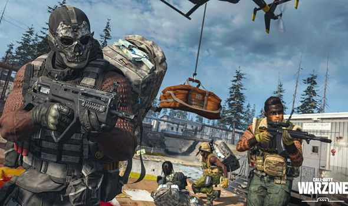
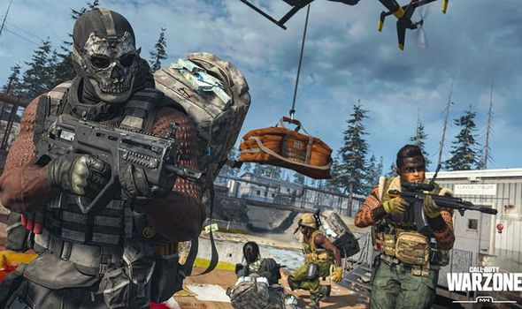
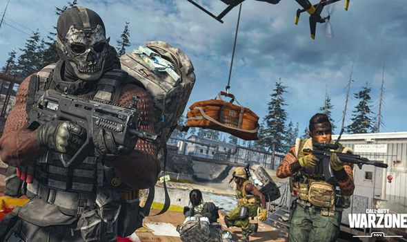

Call of Duty: Modern Warfare é um jogo eletrônico de tiro em primeira pessoa produzido pela Infinity Ward. Foi publicado pela Activision em 25 de outubro de 2019 para Microsoft Windows, PlayStation 4 e Xbox One. É o décimo sexto jogo da serie Call of Duty e atual como um "soft reboot" da sub-serie Modern Warfare.
Os eventos do jogo ocorrem num cenário realista e moderno. Pela primeira vez na história da série, Call of Duty: Modern Warfare suporta multijogador em cross-platform. Activision também confirmou que o jogo não tem Passes de Temporada, permitindo assim lançar conteúdo gratuito pós-lançamento. Também foi o primeiro jogo desde Call of Duty: Ghosts (2013) sem o modo Zombies.
Warzone, novo game Battle Royale gratuito, superou a marca de seis milhões de jogadores 24 horas após seu lançamento. O anúncio foi feito pela própria Activision, que liberou o game para download na última terça-feira (10/03/2020). O jogo está disponível para baixar no PlaySation 4 (PS4), Xbox One e PC (Battle.net). Vale lembrar que Warzone também é um modo Battle Royale incluso no Call of Duty: Modern Warfare, de 2019. Então, é possível que essa base de jogadores seja a soma dos usuários nos dois games, ainda que esta informação não tenha sido confirmada pela produtora.
O modo warzone se passa em um cenário realista e moderno. A campanha segue um oficial da CIA e as forças britânicas da SAS , enquanto se unem a rebeldes do país fictício do Urzikstan, combatendo contra as forças russas que invadiram o país. O modo Special Ops do jogo apresenta missões cooperativas de jogo que acompanham a história da campanha. O modo multiplayer oferece suporte à progressão multiplayer e multiplataforma pela primeira vez na série. Foi reformulado para que o jogo seja mais tático e apresenta novos recursos, como o modo Realismo, que remove o HUD , bem como uma forma do modo Guerra Terrestre, que agora suporta 64 jogadores.
